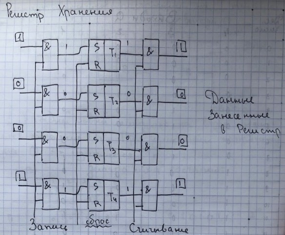
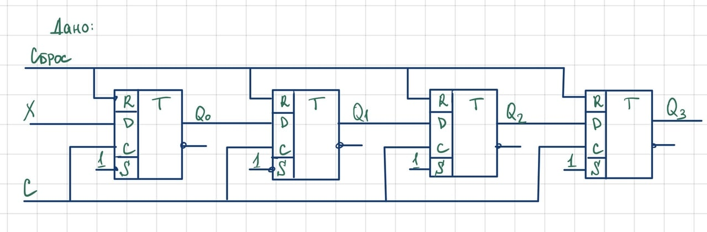
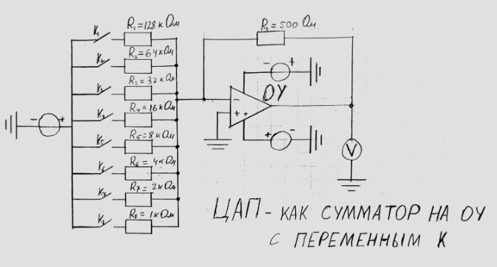
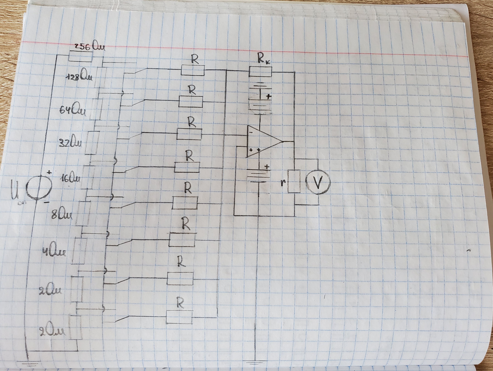

Задание №1: Показать 'работу' 4-х разрядного регистра
хранения на базе асинхронных RS-триггеров
- продемонстрировать работу блоков записи и считывания кодов;
- дополнить схему моделью устройства, которое преобразует двоичный
код в десятичное изображение на семисегментном индикаторе
Для выполнения задания необходимо собрать и показать работоспособность
схемы 4-х разрядного регистра хранения на
базе асинхронных RS триггеров,приведенную ниже, используя программу TINA
 Мы задаем определенное значение на суммирующем счетчике и потом передаем это значение в наш
регистр хранения. Далее мы преобразуем двоичный код в десятичный с помощью семисегментного индикатора.
Задание №2: Показать 'работу' 4-х разрядного регистра
сдвига на базе D-триггеров
Для выполнения задания необходимо собрать и показать работоспособность
схемы 4-х разрядного регистра сдвига на базе D-триггеров, приведенную ниже,
используя программу TINA:
 Данное устройство должно преобразовать входной последовательный двоичный код, далее необходимо
зафиксировать его преобразование в параллельный код.
Задание №3: Показать 'работу' схемы ЦАП, как сумматора на базе ОУ с переменным К
Для выполнения задания необходимо собрать и показать работоспособность
схемы ЦАП, как сумматора на базе ОУ с переменным К, приведенную ниже,
используя программу TINA:
 Это устройство должно преобразовать входной двоичный код,
задающийся с помощью ключей Kn в соответствующий ему аналоговый сигнал.
Для нашей модели, использующей восьмиразрядный код, шаг дискретизации
должен составлять Uвх/2^8.
Задание №4: Показать 'работу' схемы ЦАП, как сумматора на базе ОУ с постоянным К
Для выполнения задания необходимо собрать и показать работоспособность
схемы ЦАП, как сумматора на базе ОУ с постоянным К, приведенную ниже,
используя программу TINA:
 Это устройство преобразует входной двоичный код, задающийся с помощью ключей Kn в соответствующий
ему аналоговый сигнал. Нужно добиться того, чтобы напряжение в ветвях схемы каждого разряда
суммировалось, давая на выходе выходной аналоговый сигнал.
Задание №5: Показать 'работу' схемы ЦАП на базе специальной
микросхемы (DAC) в сотаве этой модели
Для выполнения задания необходимо собрать и показать работоспособность
схемы ЦАПна базе специальной микросхемы (DAC) в сотаве этой модели, приведенную ниже,
используя программу TINA:
Должна получиться модель, работающая аналогично моделям из заданий 3 и 4.